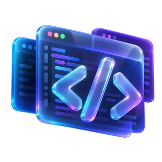
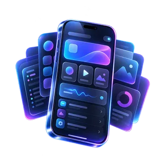
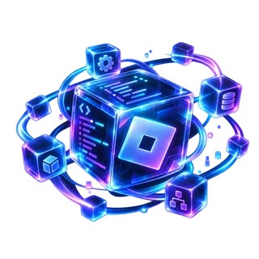

FrontendReact · Next.js · TypeScript
I'm Lil Ami — a Senior Software Developer and the CEO & Founder of TuerSS. I work across frontend, backend, Android/Expo, AI, APIs, cybersecurity research, and Roblox/Luau systems.

Senior Software Developer
Serious work onlyProjects, jobs, partnerships



01 / ABOUT
I work across interface design, frontend architecture, backend engineering, databases, authentication, mobile apps, AI integrations, APIs, automation, cybersecurity research, deployment, and production polish.
I like projects where several layers need to work together. I can take a product through interface, frontend, backend, data, auth, integrations, deployment, and iteration instead of treating every layer like a separate project.
I approach software with validation, abuse resistance, permission boundaries, and failure modes in mind.
02 / WHAT I BUILD
If you need a real website, app, backend, API, AI feature, developer tool, or Roblox system—not a throwaway demo—you can contact me about the job.
Business sites, SaaS products, dashboards, account systems, internal tools, and full-stack platforms.
Expo and React Native apps with polished UI, navigation, backend connections, authentication, and real application logic.
REST APIs, authentication, databases, integrations, server logic, validation, and production-focused architecture.
Assistants, model integrations, automation, structured workflows, internal tooling, and AI-powered product features.
Application-security thinking, defensive architecture, validation, vulnerability research, and safer system design.
Luau gameplay systems, progression, abilities, UI, networking, client/server logic, validation, and prototypes.
03 / BACKGROUND
My background combines practical frontend and backend development with cybersecurity research and formal technical education.
Application security, defensive analysis, vulnerability research, secure architecture, and understanding failure modes.
Formal study supporting my work in secure software development, systems analysis, and cybersecurity research.
Technical education that complements my software work with a deeper understanding of computing systems.
Graduated from Michigan Great Lakes Virtual Academy in 2025.
Website intelligence and operations across SEO, security, analytics, automation, and AI.
As CEO & Founder, I work across product direction, frontend, backend infrastructure, APIs, developer experience, AI features, automation, and the systems that turn technical findings into useful actions.
SecuritySurface important technical risks
inspectSEOFind discoverability opportunities
optimizeAnalyticsUnderstand website performance
measureAI OperationsTurn findings into action
assist04 / STACK
05 / HOW I BUILD
The goal is not to make code look impressive. The goal is to make the product feel intentional, maintainable, fast, security-minded, and actually useful.
06 / WORK WITH ME
If you need a website, frontend, backend, full-stack app, Android app, API, AI integration, developer tool, cybersecurity-minded engineering work, or Roblox system, I'm open to hearing about serious work.